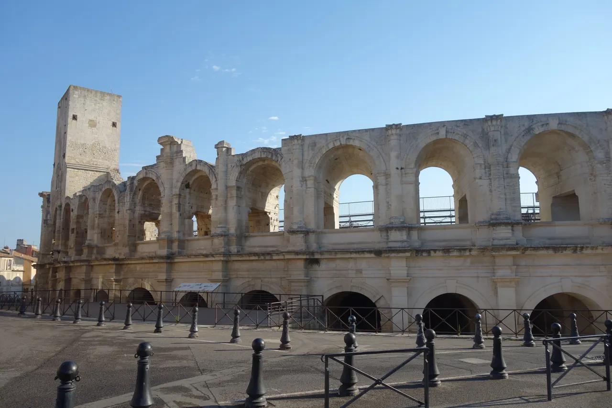

{kind=link}
관광·미술관
Nous avons déjà des billets.
이미 표가 있습니다.
누 자봉 데자 데 비예

서기 90년 플라비우스 왕조(티투스~도미티아누스 황제 시기)에 로마의 콜로세움을 본떠 축조된 현존하는 가장 웅장한 로마 원형 경기장 중 하나(유네스코 세계유산)이다.
길이 136m, 너비 109m의 거대한 타원형 구조물로, 2단으로 겹쳐진 120개의 석조 아치(도리아 양식 하단, 코린트 양식 상단)가 2만 명 이상의 관중석(Cavea)을 떠받치고 있다.
로마 제국 멸망 후에는 8세기부터 18세기까지 아치를 돌벽으로 메우고 내부에 200여 채의 주택과 성당 2곳이 들어선 '성벽 안의 요새 마을'로 변모했던 기괴하고도 독특한 역사를 간직하고 있으며, 현재도 전통 카마르그 투우(Course Camarguaise)와 대형 음악회가 열리는 살아있는 현역 유적이다.
"박제된 고대 유적이 아니라, 2천 년간 검투사 투기장에서 중세 피난민의 요새 마을로, 다시 현대 시민들의 축제 무대로 끊임없이 변신해 온 아를의 영혼이다." 1층 석조 회랑을 돌아 상부 관람석으로 올라간 뒤, 중세 사각 망루(Tour médiévale) 정상에 올라 붉은 테라코타 지붕들과 론 강을 360도로 굽어보는 60분 코스가 필수적이다.
| 운영시간 | 재확인 |
|---|---|
| 휴무 | 재확인 |
| 예약 | 재확인 |
| 항목 | 상세 정보 |
|---|---|
| 위치 | 1 Rond-Point des Arènes, 13200 Arles |
| 운영 시간 | 매일 09:00–19:00 (11월–2월은 17:00까지, 마지막 입장 마감 30분 전) |
| 입장료 | 단독 입장 성인 €9.00, 할인 €7.00 / Pass Monument Avantage (€13.00, 강력 권장) 이용 시 고대 극장, 생트로핌 회랑 등 6개 유적 통합 관람 가능 |
| 보행 주의 | 관람석과 망루 계단이 매우 가파르고 표면이 닳아 미끄러우므로 편안한 운동화 필수 |
| 그늘 부족 | 여름 한낮에는 경기장 내부 복사열이 심하고 그늘이 없으므로 모자, 생수, 선글라스 필수 |
| 이동 연계 | 경기장 남쪽 출구로 나오면 도보 2분 거리에 Théâtre Antique(고대 극장) 인접 |
Nous avons déjà des billets.
이미 표가 있습니다.
누 자봉 데자 데 비예
On peut prendre des photos ?
사진 찍어도 되나요?
옹 푀 프랑드르 데 포토
Où commence la visite ?
관람은 어디서 시작하나요?
우 코망스 라 비지트

높이 15m 거대한 지하 백색 석회암 채석장 동굴 전체를 디지털 캔버스로 변모시킨 세계 최초·최대 규모의 몰입형 미디어 아트 공간. 7,000㎡ 암벽과 바닥을 감싸는 빛과 음악의 향연.

기원전 6세기 켈트 성소에서 헬레니즘 도시를 거쳐 로마 제국의 온천 휴양도시로 번영했던 거대한 고대 발굴 유적지. 갈리아에서 가장 완벽하게 보존된 기원전 1세기 로마 영묘와 개선문 '레 장티크(Les Antiques)'.

알피유(Alpilles) 산맥 해발 245m 석회암 절벽 위에 우뚝 솟은 중세 독수리 요새 마을. 자연 암반과 성벽이 하나로 결합된 레보 성채(Château des Baux) 폐허와 올리브 계곡 대파노라마.

세계적인 식물학자 파트리크 블랑의 300㎡ 거대한 수직 정원(Mur Végétal) 외벽 아래 40여 개 프로방스 전통 식재료 좌판이 모인 아비뇽의 활기찬 실내 중앙 미식 시장.

14세기 가톨릭 교황청이 로마를 떠나 68년간 머물렀던 서유럽 최대의 중세 고딕 요새 궁전. 베네딕토 12세의 구궁전과 클레멘스 6세의 신궁전, 마테오 조바네티의 프레스코화와 히스토패드 3D 증강현실 복원.

12세기 론(Rhône) 강을 건너 교황령 아비뇽과 프랑스 왕국을 잇던 920m의 유일한 석조 다리. 소빙하기의 거센 홍수로 22개 아치 중 4개와 2층 생니콜라 예배당만 남은 유네스코 세계유산.